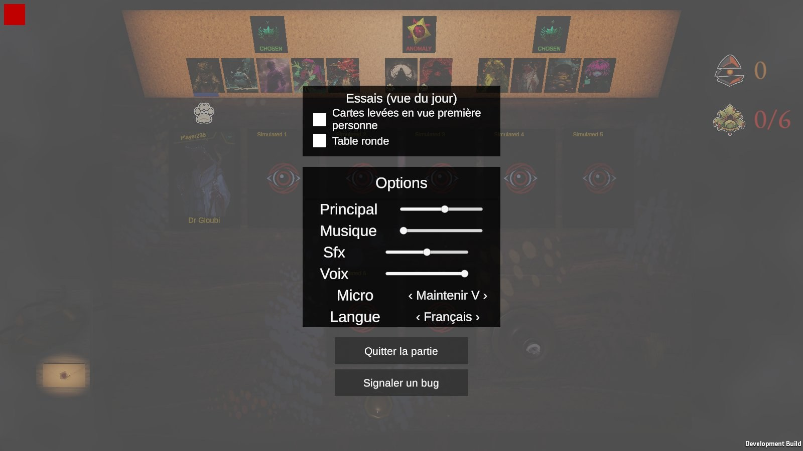

La demande. T9, « des placeholders plus jolis » : la page promise après le premier tour (voté et dans le jeu, PR #214 et #215). Les curseurs sont déjà faits (pattes de Wouh, PR #213), ils ne sont pas ici.
Aujourd'hui (capturé ce soir sur le build T9) : la pause est faite de boîtes noires d'Unity en Liberation Sans (titre « Options », quatre curseurs blancs, « Micro », « Langue »), un encadré « Essais (vue du jour) », un bouton gris « Quitter la partie », et un carré rouge sans texte pour fermer. Les mêmes Options sont au menu principal. La fin de partie pose un bandeau noir « Gagnants », retourne les cartes des gagnants et affiche un bouton vert « Terminer la partie » chez l'hôte seulement ; personne ne voit quel camp a gagné ni s'il a gagné lui-même, les autres joueurs n'ont aucun bouton. Le bandeau des rôles se soulève au survol avec un contour jaune plat. Le tableur de la tablette met des ✓ ? ✗ de police dans des cases grises, la fiche de rôle ses ★ en texte. Les barres de défilement du chat et des listes sont celles d'Unity, blanches.
Référence. Among Us : « Victoire » ou « Défaite » plein écran, propre à chacun, puis les gagnants alignés ; l'hôte relance, les autres peuvent quitter. Town of Salem : la fin liste chaque joueur avec son rôle révélé et marque les gagnants. Inscryption : la pause et les options restent dans le décor (papier, bois, encre), jamais une fenêtre grise.
La scène. Fin du jour 6, 8 joueurs, la vraie partie de ce soir : les deux Anomalies (Va'ahl et Abyss) sont enchaînées, les Élus gagnent. Tu es l'hôte, Dr Gloubi (Player236). En pause, tu as baissé la musique.
Sans question. Tous ces écrans passent en IM Fell et sortent de Liberation Sans. « Sfx » devient « Effets », « peut être » devient « Peut-être ». Le menu principal reprend la même feuille d'Options que la pause. Tout texte passe par la traduction anglaise, chaque clic est journalisé.
Pas dans ce tour. L'écran de connexion et les boutons blancs du menu principal, le panneau noir du chat lui-même (une autre page si tu veux). La bave à usage unique et le modèle de Luma sont de la 3D : rendus depuis Unity sur une page à part.
Tout réagit : survole, clique, tire les curseurs.
Ce choix décide aussi de la forme de la section 2.
Boîtes noires d'Unity, carré rouge pour fermer.

Le liège et les papiers du salon : les options sur un parchemin, les actions sur des étiquettes épinglées, les essais sur une note.
Un carnet ouvert comme le grimoire du menu : les actions sur la page de gauche, les options sur celle de droite.
Le plus direct : la partie s'assombrit, les mots sont posés dessus, sans cadre ni papier.
Barre blanche et bouton rond, case blanche.
Un trait d'encre ; on tire la patte de Wouh, qui appuie pendant qu'on la tient. La case cochée prend sa coche verte.
Dix encoches à l'encre, on les remplit d'un clic ou en glissant ; coche tracée à la plume.
Bandeau « Gagnants », les cartes des gagnants se retournent, bouton vert chez l'hôte seulement.
Le camp gagnant et ton résultat d'abord, puis les cartes des gagnants qui se retournent, les vaincus en petit dessous. La planche de Wouh sert de bouton.
Un parchemin liste les 8 joueurs avec leur rôle révélé, leur camp et leur état ; les vaincus pâlissent, ta ligne porte ta patte.
Un mot plein écran, le tien, puis il monte et la table montre toutes les cartes à leur place : gagnants dorés, vaincus éteints.
Aujourd'hui seul l'hôte a un bouton, et « Terminer la partie » renvoie tout le monde au menu.
Ils regardent les cartes et attendent que l'hôte termine.
« L'hôte va terminer la partie. » écrit là où l'hôte a sa planche.
Les autres ont la planche « Quitter la partie » (retour au menu, seul) ; l'hôte garde « Terminer la partie » qui renvoie tout le monde. C'est ce que montrent les cadres de la section 3 côté Va'ahl.
Survole les portraits du bandeau (dessiné à plat ici, il est penché en jeu). Le liseré doré est déjà la marque de la Bénédiction (tour 1, B2).
Le portrait se soulève, contour jaune plat de 4 px.
Le portrait soulevé prend le bord blanc et le trait noir des dessins de Wouh, comme les marques des cartes.
Il se soulève, s'éclaire un peu et projette son ombre ; aucun trait autour.
Le même halo jaune que les chats, la bougie ou le sac au survol : un seul langage pour « ce qu'on pointe ».
Clique les cases du tableur.
Signes de police dans des cases grises, la case choisie se colore.
La coche et la croix des verdicts (tour 1, K1), un « ? » et des étoiles dessinés pareil ; les signes non choisis restent en ombre grise.
Les signes sont écrits à la main, à l'encre ; la couleur ne vient que sur celui qu'on choisit.
Fais défiler le chat. Les deux styles déjà en jeu ailleurs sont D1 (fiche de rôle, salon) et D2 (tableur).
Large barre blanche sur fond gris.
6 px, couleur du texte, partout pareil.
10 px, l'or du cadre du tableur, partout pareil.
Le trait fin n'apparaît qu'au survol ou pendant le défilement.